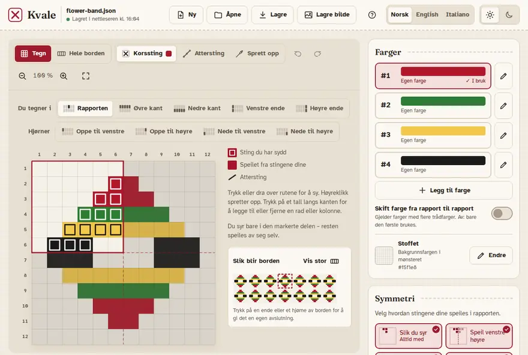
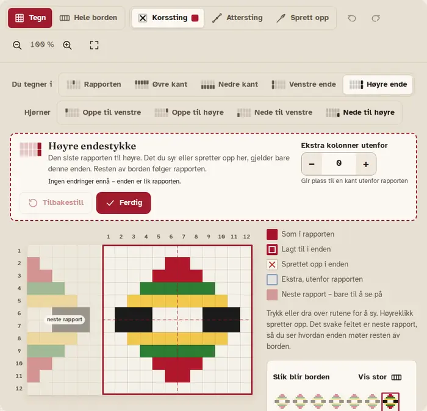
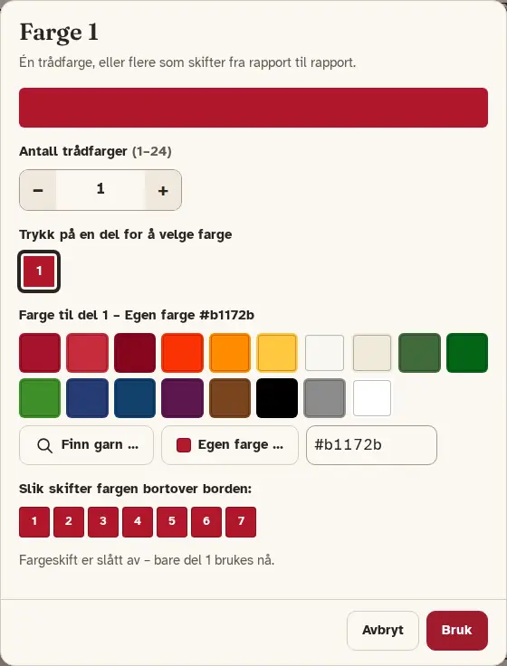
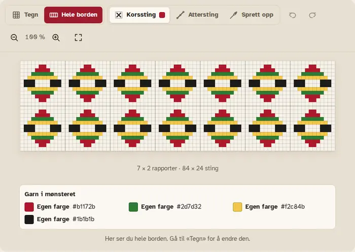

Slik bruker du Kvale
Kvale hjelper deg å tegne bunadsborder i korssting. Du syr en liten del, og Kvale speiler den og gjentar den til en hel bord.
Kom i gang
Kvale går i nettleseren. Første gang tar det noen sekunder før den er klar; etterpå går det fortere.
- I midten er rapporten: feltet du tegner i. Den gjentas bortover og nedover borden.
- Til høyre er Farger, Symmetri og Rapport og størrelse.
- Øverst er Ny, Åpne, Lagre og Lagre bilde, språk og lyst eller mørkt utseende, og Hjelp (?), som åpner denne veiledningen.
- Tegn og Hele borden bytter mellom å tegne og å se den ferdige borden.

Tegn i den markerte delen
Velg Korssting og en farge, og trykk eller dra over rutene for å sy.
- Når en symmetri er slått på, er en del av rapporten markert. Du syr bare der – resten speiles av seg selv.
- Sting du har sydd, har en ramme. Sting som er speilet fra dine, er fylt ut.
- For å fjerne sting velger du Sprett opp og trykker på dem. Med mus kan du også høyreklikke.
- Angre og Gjør om er de buede pilene (Ctrl+Z og Ctrl+Y).
- Zoom med forstørrelsesglassene. Tilpass viser hele mønsteret på skjermen.
Den lille borden under tegnforklaringen viser hvordan borden blir mens du tegner.
Symmetri
Under Symmetri velger du hvordan stingene dine speiles i rapporten. Du kan slå på flere samtidig; de virker sammen.
- Slik du syr er alltid med.
- Speil venstre–høyre og Speil opp–ned kopierer stingene til den andre siden.
- Drei 180° dreier dem rundt midten.
- Drei 90°, Drei 270° og speiling på skrå krever kvadratisk rapport. Er rapporten ikke kvadratisk, får du en knapp som gjør den det.
Under Kanten mellom rapportene (i Rapport og størrelse) velger du om en ytterste rad eller kolonne skal sys i hver rapport eller deles av to naborapporter.
Endestykker og hjørner
En bord har ofte en egen avslutning i endene. Velg endestykket i linjen Du tegner i (Venstre ende, Høyre ende, Øvre kant, Nedre kant), eller trykk på det i den lille borden.
- Det du syr eller spretter opp der, gjelder bare denne enden. Resten av borden følger rapporten.
- Det svake feltet er neste rapport, så du ser hvordan enden møter resten av borden.
- Ekstra kolonner utenfor eller Ekstra rader utenfor gir plass til en kant utenfor rapporten.
- Ferdig tar deg tilbake til rapporten. Tilbakestill fjerner alle endringer i enden – du blir spurt først, og du kan angre etterpå.

Hjørner
Der to endestykker møtes, er det et hjørne (Oppe til venstre, Oppe til høyre, Nede til venstre, Nede til høyre). Hjørnet begynner slik de to endestykkene gjør det, og så kan du gi det en egen avslutning. Størrelsen følger de ekstra radene og kolonnene i endestykkene ved siden av.
Attersting
- Velg Attersting.
- Trykk på et hjørne av en rute for å begynne, og på neste hjørne for å sy en linje.
- Linjen fortsetter fra det siste punktet, så du kan sy flere linjer etter hverandre.
- For å slutte: trykk Esc, trykk på det siste punktet en gang til, eller velg et annet sting.
For å fjerne en attersting velger du Sprett opp og trykker på linjen. Attersting speiles som korssting, og du kan bruke den i endestykker og hjørner også.
Farger og DMC-garn
Under Farger trykker du på en farge for å sy med den (eller trykk 1–9). Blyanten åpner fargen så du kan endre den. Legg til farge gir deg en ny.
- Finn garn … lar deg søke i DMC-garn med nummer eller navn, for eksempel 321. Garnet vises alltid med garnprodusent, som «DMC 321».
- Egen farge … lar deg velge hvilken som helst farge.
- Fargene på skjermen er omtrentlige. Sjekk mot et fargekart når fargen må stemme.
Farger som skifter fra rapport til rapport
Én farge kan ha flere trådfarger som skifter bortover borden. Øk Antall trådfarger og trykk på hver del for å velge farge. Slå på Skift farge fra rapport til rapport for å bruke dem; er den av, brukes bare den første.

Stoffet er bakgrunnsfargen i mønsteret.
Rader og kolonner
- Trykk på et tall langs kanten av rutenettet for å legge til en rad eller kolonne ved siden av, eller for å fjerne den.
- Eller bruk Legg til eller fjern rad/kolonne … under Rapport og størrelse.
- Med symmetri på kan Kvale ta med flere enn den du valgte, så mønsteret holder seg likt. Det står hva som skjer før du bekrefter.
- Bredde og Høyde bestemmer størrelsen på rapporten; Antall rapporter bestemmer hvor mange ganger den gjentas bortover og nedover.
Lagre, åpne og bilde
- Lagre laster ned mønsteret som en fil (.json) som du kan ta vare på og åpne igjen (Ctrl+S).
- Åpne åpner en slik fil (Ctrl+O).
- Ny begynner på et nytt mønster. Har du endringer som ikke er lagret i en fil, blir du spurt først.
- Lagre bilde laster ned hele borden som bilde (PNG), med attersting, endestykker og lista over garn.

Lagres av seg selv
Arbeidet lagres av seg selv her i nettleseren, og mønsteret åpnes igjen neste gang du kommer tilbake. Øverst står det når det sist ble lagret.
Kopien i nettleseren finnes bare i denne nettleseren på denne enheten, og den blir borte hvis nettleserdataene slettes. Trykk Lagre for å få en fil du kan ta vare på.
Installer og bruk uten nett
Etter første besøk virker Kvale også uten internett – alt den trenger, ligger i nettleseren. Du kan installere den, så den åpnes som en app:
- Chrome eller Edge (datamaskin eller Android): trykk Installer appen øverst, eller bruk installer-ikonet i adressefeltet eller i menyen.
- iPhone og iPad (Safari): trykk Del, og så «Legg til på Hjem-skjerm».
- Safari på Mac: Arkiv → «Legg til i Dock».
Når en ny versjon av Kvale er klar, kommer det en melding om det. Trykk Last inn på nytt for å ta den i bruk; arbeidet ditt blir tatt vare på.